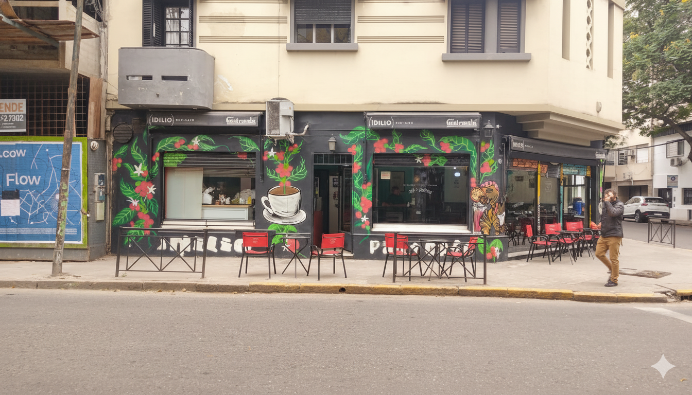
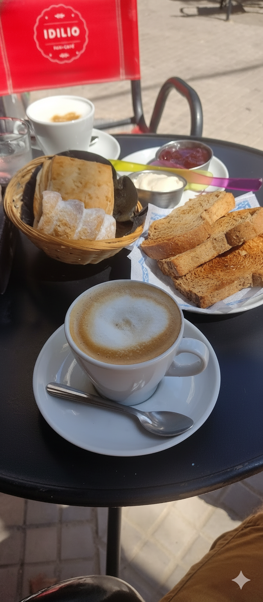
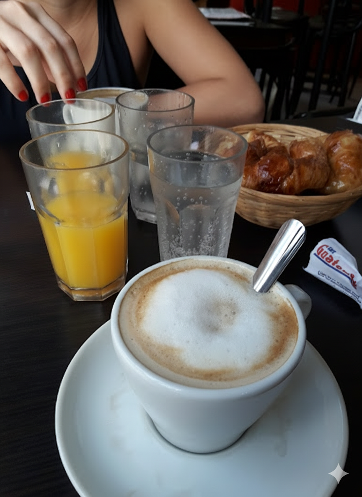
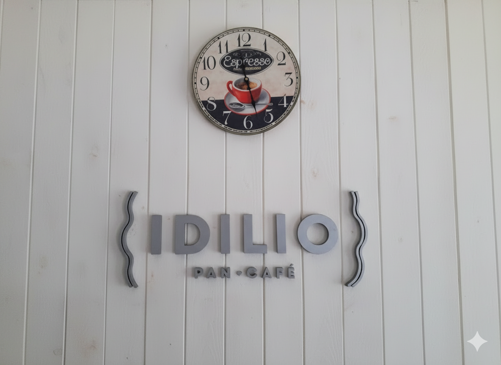
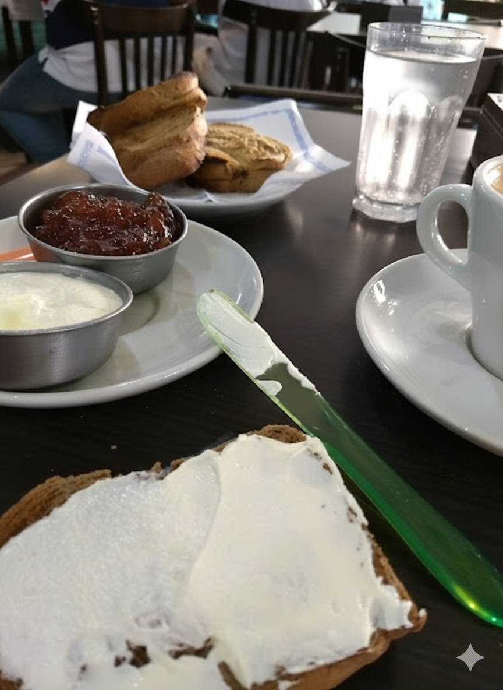
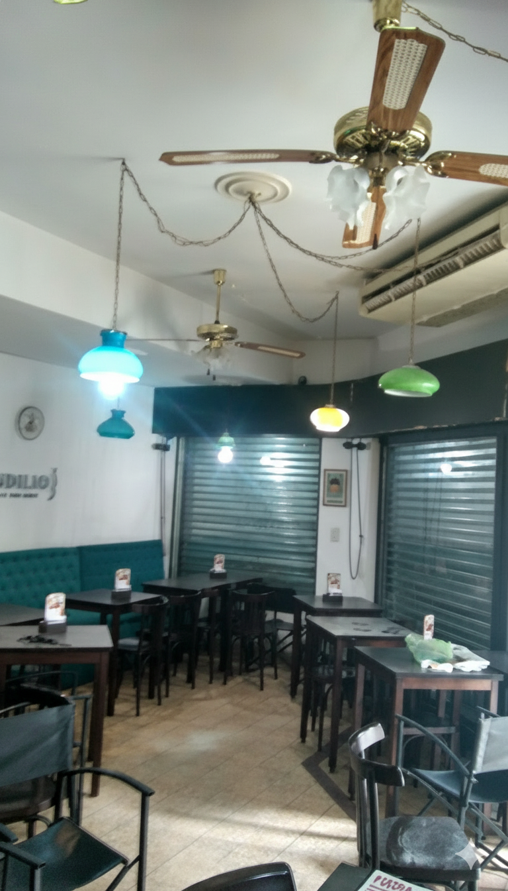
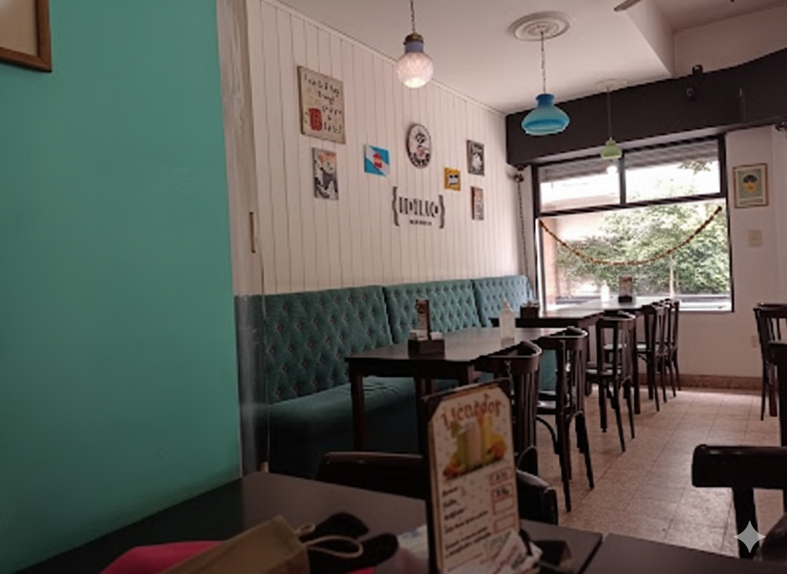
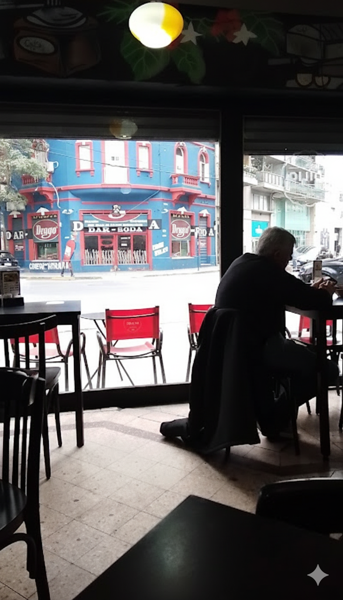
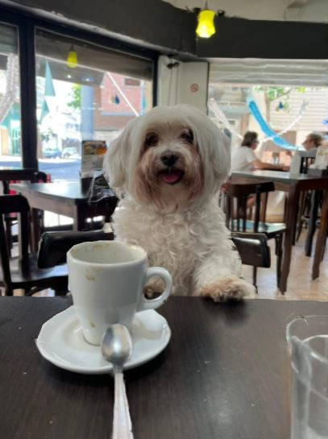

Bar Idilio
Nuestra Historia
Galería
Descubre el ambiente acogedor y las delicias que te esperan en Bar Idilio

Café y Tostadas










Contacto
Visítanos y disfruta de la mejor experiencia cafetera de Rosario
Información de Contacto
Horarios
Lunes a Viernes: 6:30 - 14:00
Sábados: 7:00 - 13:00